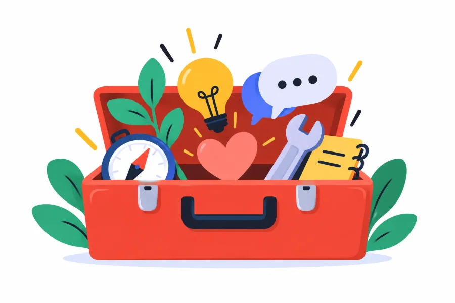
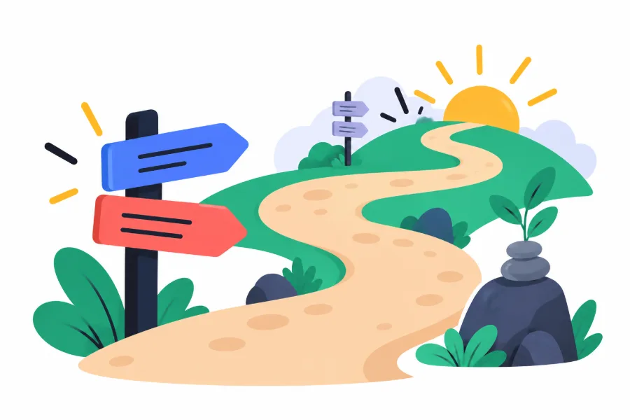
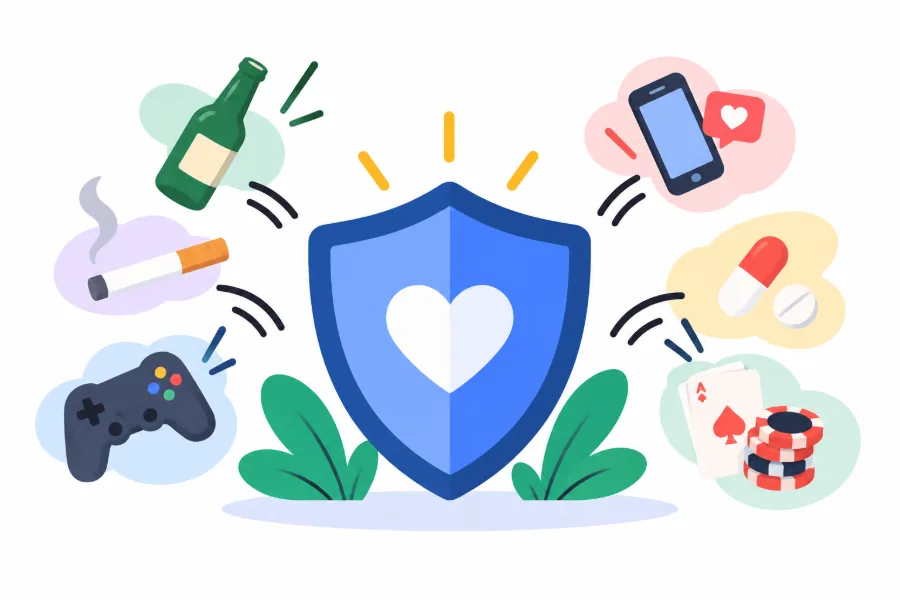

En què consisteix
Quan entenem millor el que viuen els nostres fills i filles, és més fàcil acompanyar-los. Un taller per comprendre l'adolescència i cuidar el benestar emocional de tota la família.

L'adolescència és una etapa de canvis físics, emocionals, socials i personals. Els fills i filles comencen a construir la seva identitat, busquen més autonomia i necessiten trobar el seu lloc al món.
Per a les famílies, aquests canvis poden generar dubtes, desconcert o noves situacions de convivència.
Aquest taller proposa un espai per comprendre millor què passa durant l'adolescència, revisar algunes idees preconcebudes i descobrir recursos per viure aquesta etapa amb més confiança i proximitat.
Quan entenem millor el que viuen els nostres fills i filles, és més fàcil acompanyar-los. Un taller per comprendre l'adolescència i cuidar el benestar emocional de tota la família.
Afavorir una mirada comprensiva sobre l'adolescència i oferir un espai perquè les famílies puguin reflexionar sobre la seva manera d'acompanyar els fills i filles.
Una sessió participativa que combina explicacions breus i accessibles sobre l'adolescència amb espais de reflexió i de conversa entre les famílies. El punt de partida són els dubtes i les situacions que porten les persones participants.
Perquè els fills i filles necessiten guanyar autonomia i construir la seva pròpia identitat. És habitual que busquin més espai, qüestionin algunes normes i donin més pes al grup d'amistats. Això no vol dir que la família deixi de ser important: canvia la manera d'acompanyar-los, i entendre aquests canvis ajuda a viure'ls amb menys desconcert.
Sí. Està adreçat a famílies amb fills i filles preadolescents i adolescents, de manera que també és útil per anticipar-se als canvis abans que arribin.
No. El taller està pensat per a les persones adultes que acompanyen els fills i filles: mares, pares i altres referents familiars.
Sí. Les AFAs i AMPAs són entre els destinataris d'aquest taller, igual que els centres educatius, els ajuntaments i les entitats. Pots demanar-ne informació des del formulari de contacte.
Vols organitzar aquest taller per a les famílies del teu centre?

Programa de dues sessions (Entendre i Acompanyar) per comunicar-se amb més proximitat i posar límits amb respecte.

Amb Sergi Garcia i Ariadna Busqué. Estratègies per obrir converses honestes sobre addiccions amb fills i filles adolescents.